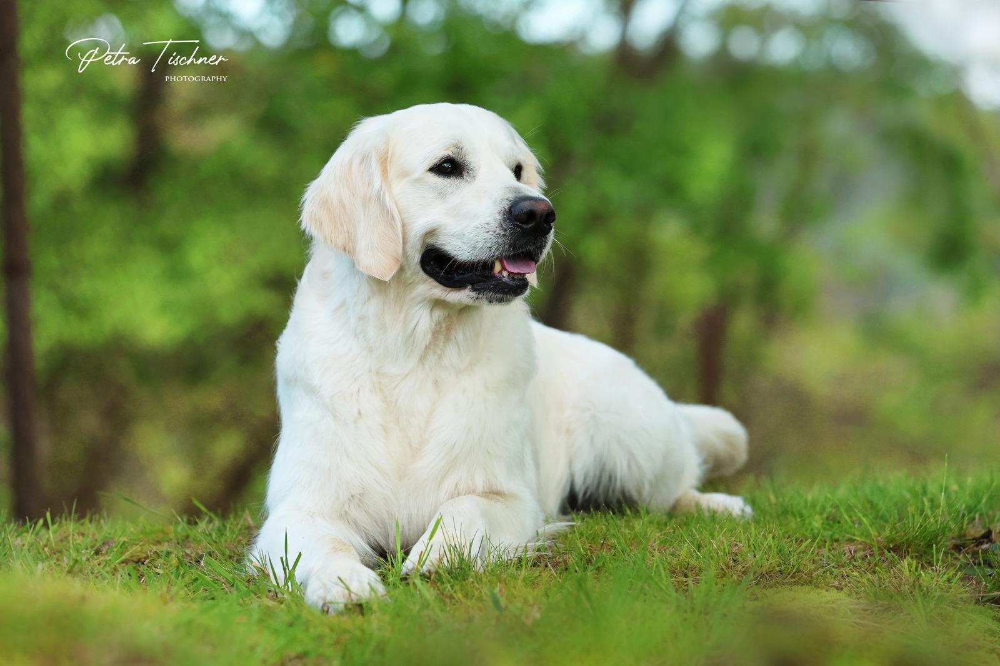
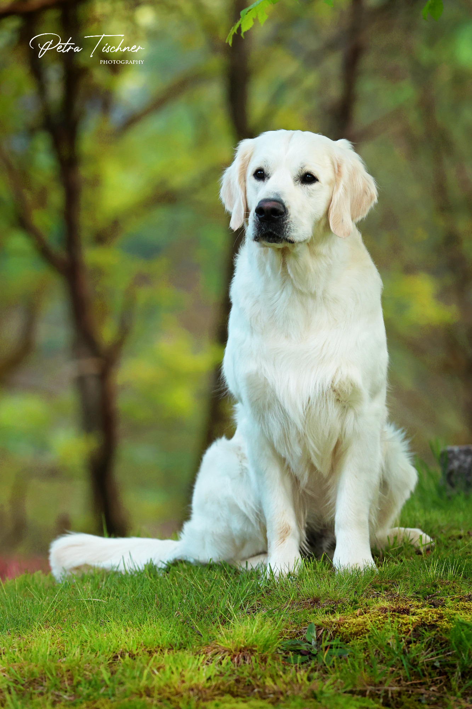
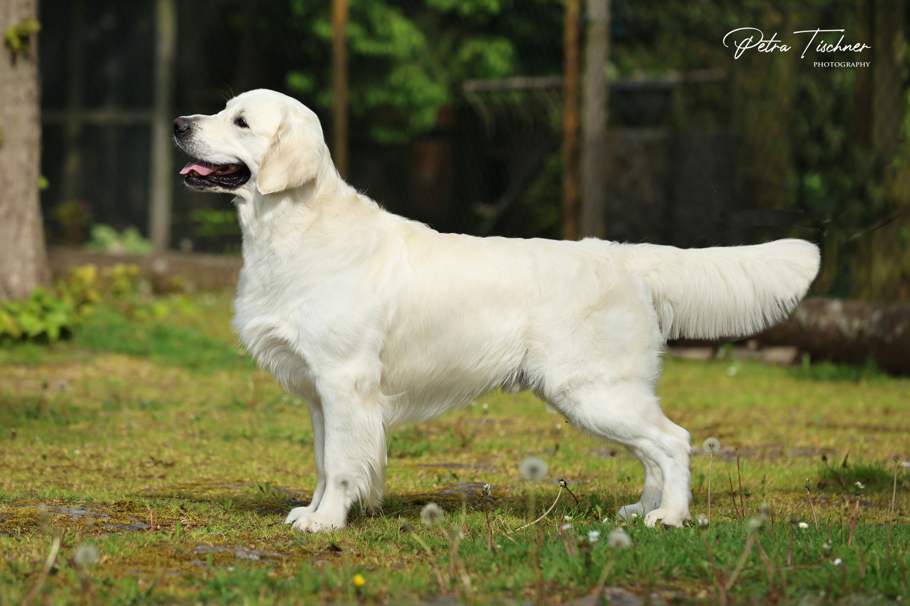
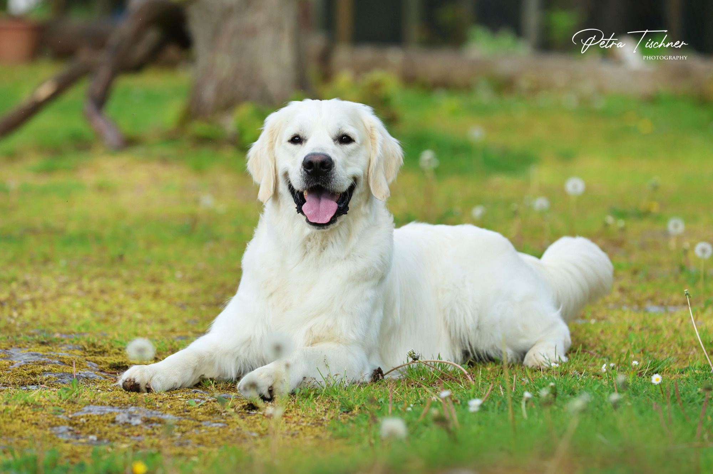
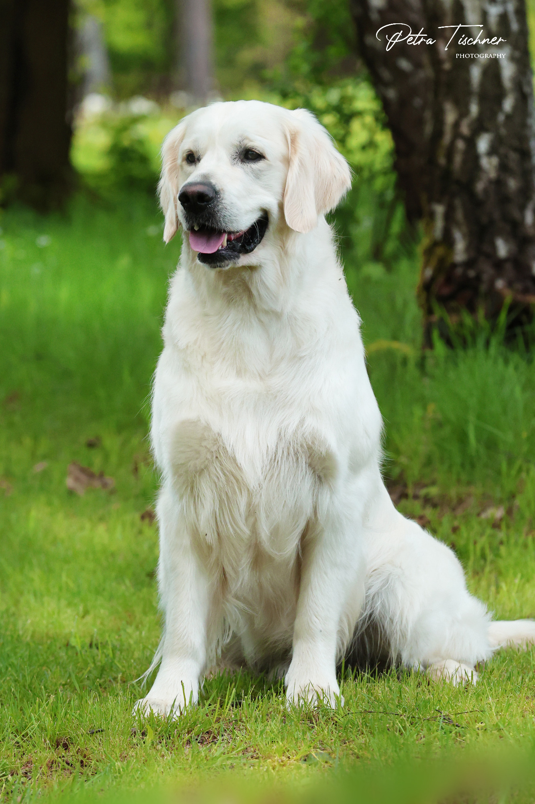

YOU ARE THE ONE GATE OF EAST (Yannik)
Daten
| Vater | MAJIK CHUFFY CHUFFNELL |
| Mutter | I'M TERRA ANTYDA JUST JULIET |
| Züchter | Jaroslaw Ruszczak |
| Besitzer | Doris Lutz und Torsten Kaufmann |
| HD/ED | HD: A2/A2 ED: frei/frei |
| Augen | RD/PRA/HC Gonio frei, PRA 1 u. PRA 2 frei, rcd 4 PRA frei |
| DNA | Ichthyose frei |
| Prüfungen |
22.10.2022 Ellwangen Wesenstest bestanden 22.10.2022 Ellwange Formwert „vorzüglich“ 22.10.2022 Ellwangen Begleithundeprüfung A o.S. „sehr gut bestanden“ 09.10.2022 Ruhla JAS/R „teilgenommen“ 01.04.2023 Ellwangen Dummyprüfung „sehr gut bestanden“ |

Link zu den Webseiten: www.stonecross-golden.de und www.goldenangels.de
×




